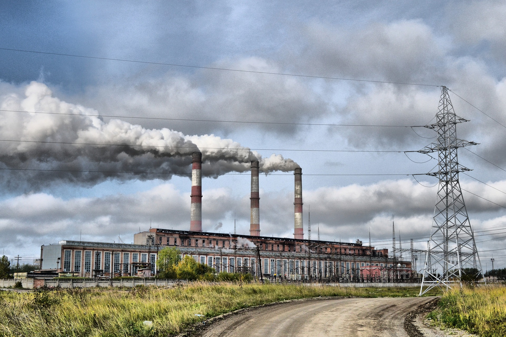

Як повідомляється в звіті Міжнародного енергетичного агентства, в рік через забруднення повітря вмирає близько 6,5 мільйонів чоловік! У доповіді Всесвітньої організації охорони здоров'я за 2012 рік говорилося, що з забрудненням повітря були пов'язані 3,7 мільйона смертей на рік. Збільшення кількості смертей, безсумнівно, підкреслює масштаби проблеми і вказує на необхідність вжиття термінових заходів.
Люди усвідомлюють, що майбутнє буде в небезпеці, якщо не почати вживати заходів. Уряд реагує на заклики, намагаючись екологізувати економіку. Найчастіше очищення повітря - це так само просто, як прийняття нових норм викидів для автомобілів або прибирання сміття в околицях. Так, Нью-Делі і Нью-Мексико взяли більш жорсткі заходи контролю за транспортними засобами, щоб знизити зменшити кількість смогу.
